of states
of states  ; it is pure iff
; it is pure iff  , and for a qubit
, and for a qubit Definition
,
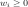
,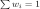
(von Neumann 1927). Properties: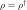
,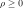
,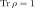
. Expectation: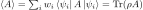
. Evolution: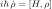
(von Neumann). Measurement of :
: 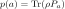
,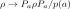
.Purity and entropy
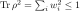
in an eigenbasis, with equality iff one weight is 1 (pure state). Von Neumann entropy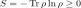
, zero only for pure states, maximal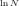
for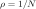
.Qubit: the Bloch ball
Any
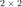
Hermitian matrix of trace 1 is ; its eigenvalues are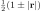
, so positivity means . Pure states lie on the sphere,
. Pure states lie on the sphere, 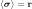
.Partial trace
For
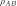
on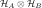
, the reduced state is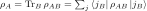
; it gives all statistics of observables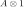
. For the singlet,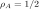
: a pure global state can have maximally mixed parts (entanglement) (Landau 1927).Thermal state
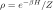
,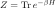
, maximises at fixed
at fixed 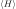
. Example: spin ½ in ,
, 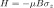
: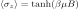
, Curie paramagnetism.Worked example
Unpolarised beam:
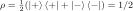
. A 50/50 mixture of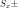
gives the same : ensembles with equal are physically indistinguishable. Compare with the pure
: ensembles with equal are physically indistinguishable. Compare with the pure 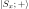
: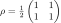
; the off-diagonal "coherences" are what distinguishes superposition from mixture.Engineering applications
Decoherence of qubits is the decay of off-diagonal elements (time  ) and relaxation of populations (
) and relaxation of populations ( ); NMR, laser rate equations and master equations are all written for .
); NMR, laser rate equations and master equations are all written for .
Pitfall
A mixture is not a superposition:
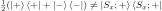
, and measuring tells them apart.
tells them apart.